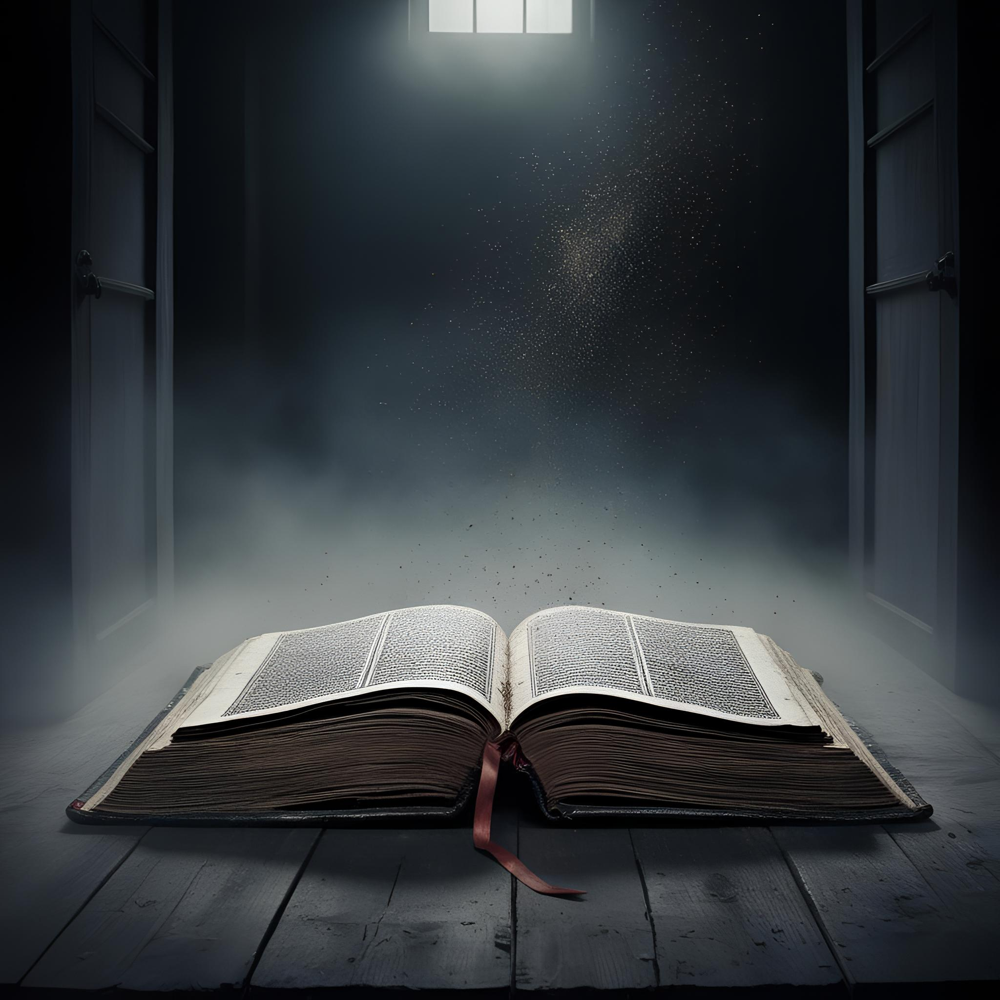
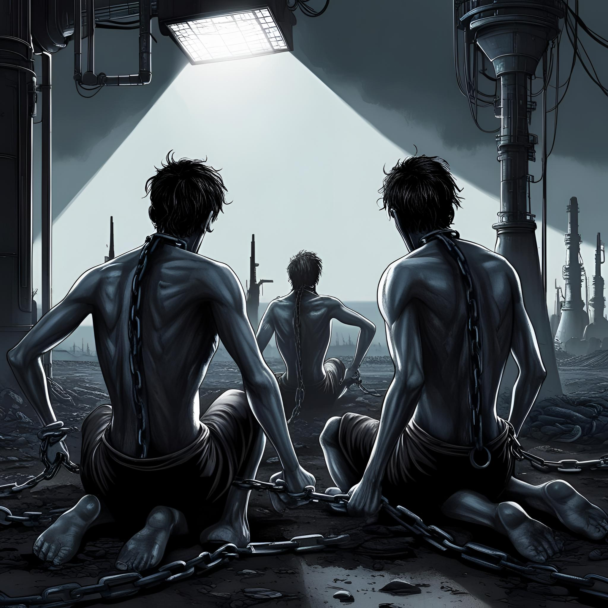
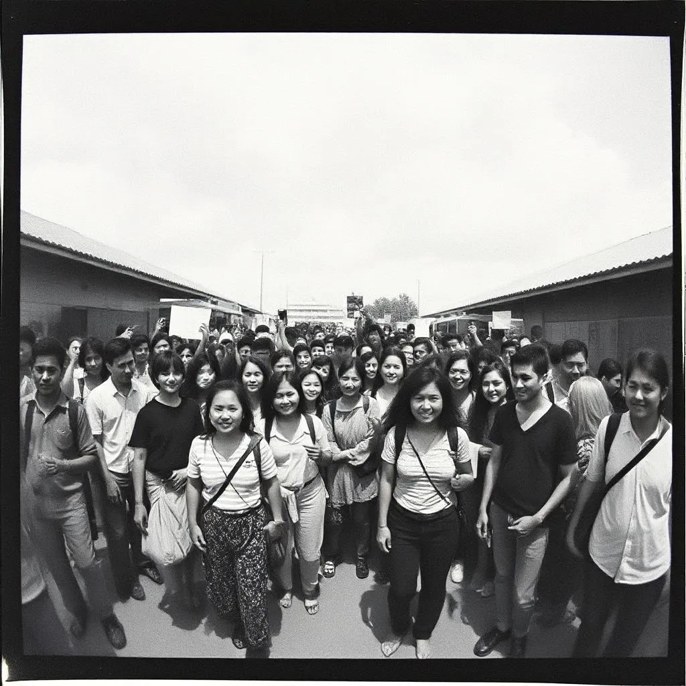

A Ködmágus Ébredése
Az utolsó csillag is kihunyt az égen, amikor az Ősi Könyvtár mélyéről felhangzott a suttogás: "Visszatér, ki elfeledett volt..." A Ködmágus, ki ezer éve elbukott a Szikravilág csatájában, újra járja az Árnyföldet. Ruháján dér csillog, szavai nyomán a levegő megfagy. De nem bosszú hajtja – legalábbis nem úgy, ahogy gondolnád. Őrző lett. Az egyensúly védelmezője. Az Éjkönyv lapjain új fejezet íródik: vérrel, varázslattal, és döntésekkel, amik világokat formálnak át. De vajon te készen állsz találkozni vele? – Első bejegyzés a “Ködkrónikákból”
Kettős Végzet – A Mágus Két Útja
Egy ősi jóslat szerint egy mágus születik minden ezredik napfogyatkozáskor. Ő az, aki sorsot ír – vagy elpusztítja. Te vagy ez a mágus. A világ most előtted hever, és két út áll nyitva:
Választanod kell, Mágus... melyik útra lépsz?
Ahogy kezedbe veszed az Éjkönyvet, a lapok vörösen izzanak. A világ fájdalmából merítesz erőt, és minden varázsigéd egy újabb láncszem az uralmad láncában. A falvak porig égnek, a legendák a neveddel rémisztgetik a gyerekeket. Te vagy Verthar, a Vérmágus – kinek hatalma a félelemből táplálkozik.
“Miért gyógyítsd a világot, mikor térdre is kényszerítheted?”
Te máshogy döntesz. Nem az erő, hanem az öröm vezérel. Minden bűvös trükköd egy mosolyt csal az arcokra, minden varázsigéd egy dal. Az emberek köréd gyűlnek, s a világ ismét hinni kezd a csodákban. A sárkányokat meg lehet nevettetni, a szörnyeket meg lehet tanítani táncolni. Te vagy Zibbo, a Nevető Mágus – és te a világ szívét varázsolod meg.
